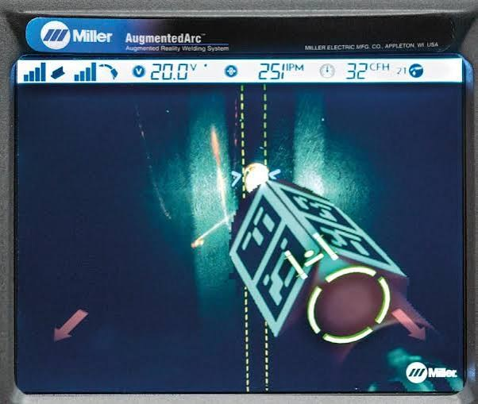

Unit objective
Given a sample AR simulator performance report, interpret the feedback data and provide constructive input to the welding student, identifying the indicator outside the acceptable range and recommending one specific technique modification.
What a simulator session records
Read the transcript
The player starts at 0:31 and plays to the end. The full transcript is below. Transcript cleaned from YouTube’s captions and checked against the audio.
0:02 To calibrate the lighting system on the helmet, you will be prompted to perform a calibration procedure prior to starting the exercise. A dashed white circle will appear in the middle of the screen. Face the helmet toward the workpiece. Aim the helmet so that the dashed white circle is aligned with the red solid circle. Hold the alignment throughout the process and a notification will be provided. The lighting calibration process can be manually initiated at any point by pressing the Settings button.
0:31 If prompted, tap the gun trigger or press the AR button to enable augmented reality mode. Place the gun at the simulated weld joint. Guides are displayed to assist with proper technique and positioning for parameters including contact-tip-to-work distance, gun angles, travel speed, and aim. If the guide is displayed in red, adjust your technique until it turns green.
0:56 During the weld simulation, the screen will darken to simulate a real welding environment. Use the up/down arrow buttons to adjust the simulated helmet shade to a value from 8 to 13. Once the simulation is complete and the simulated weld joint is filled, a notification will be displayed to prompt you to review the simulation analysis screen.
1:21 Each parameter will be scored and highlighted ones in red will indicate the welder failed to pass. To view the results in 3D view, press the AR button on the simulator or, to replay the weld, select the replay option at the top of the display screen. After the review is complete, select cancel to begin a new simulation. For more information on AugmentedArc, visit millerwelds.com.

What each indicator measures
Placeholder. Lesson text in development. Indicators covered: work angle, travel angle, contact-tip-to-work distance, travel speed, and aim.
Acceptable ranges, and how they shift with joint and position
Read the transcript
The player starts at 0:33; this lesson uses 0:33 to 1:06. The full transcript is below. Transcript cleaned from YouTube’s captions and checked against the audio.
0:02 Use the navigation buttons to select the username and press OK. Use the navigation buttons to enter the user password. Each button represents a specific numeral from 1 to 4. Press OK to log in. Select the course, module, and unit. Navigate to the desired exercise and select start. Review the exercise details and press OK.
0:33 Select an open exercise. Review the exercise settings related to difficulty, equipment settings, and real-time parameter guides. Make changes as desired and select next. Select the joint type, position, material thickness, process, filler classification, filler diameter, gas composition, and other parameters.
1:06 [Music]
1:14 Review the exercise details and press OK. For more information on AugmentedArc, visit millerwelds.com.
Placeholder. Lesson text in development.
Reading a full report
Read the transcript
The player starts at 0:15; this lesson uses 0:15 to 1:42. The full transcript is below. Transcript cleaned from YouTube’s captions and checked against the audio.
0:00 Analysis module and virtual classroom. By the end of this video, you will be able to review results, replay video of an exercise, use the virtual classroom, generate reports.
0:15 After a student completes a task, the Teacher Software lets you review the results. In the students section on the navigation header, click on students. Double-click on the name of the student whose activity you wish to review. Click on the list icon from a course to review the student's records.
0:41 A list of the modules and its tasks will be shown, along with the attempts to pass the tasks. Each attempt is named with the date and time that it was executed, and it has an icon on the left indicating with a green check mark if the attempt was passed, or with a red X if it was not.
1:09 Find the attempt that you wish to review in more detail. Click on the play icon on its right to replay the simulation video and view the overall score. Additionally, we have detailed graphs and scores for each one of the technique parameters: work angle, travel angle, CTWD, travel speed, and aim.
1:42 Virtual classroom. The virtual classroom section of the Teacher Software shows the instructor what's happening in the AugmentedArc classroom in real time, including a score for each skill and a pass or fail score for each student. Click on virtual classroom on the navigation header. Select the course that is currently ongoing in the classroom.
2:13 A list of the students logged in with an AugmentedArc is displayed along with the status of their current activity: offline, connected, theory, quiz, simulation, and analysis. Now let's click on the student's name that we want to view detailed information about their activity. In this case, we are showing the technique and overall graphs and scores of the student while welding in real time.
2:57 Reports. The Teacher Software can generate different reports that can be accessed from the courses and students tabs. Some of them are course lists report, course global report, student course average report, histogram report. [On screen: examples of report screens, no narration.]
3:52 [Music] And many more.
4:12 For additional information on setting up your AugmentedArc welding training system, see your owner's manual or visit millerwelds.com.
![An AugmentedArc analysis screen. Technique Parameters score 96 against a target of 90, marked with a green check. Six rows show work angle averaging 38 degrees scoring 95, travel angle averaging 29 degrees scoring 87 and highlighted in red, contact-tip-to-work distance averaging 0.75 inches scoring 94, travel speed averaging 9.7 inches per minute scoring 98, aim averaging 0.07 inches scoring 97, with voltage and wire feed speed both scoring 100. Each row has a trace graph showing the value over the length of the weld, with red segments where the system flagged travel angle.](images/augmentedarc-analysis-screen.jpg)
Placeholder. Lesson text in development. This lesson works through the screen above: where to look first, why a passing overall score can sit on top of a failing parameter, and why an average inside the band can still hide excursions outside it.
Turning a reading into a cue
Placeholder. Lesson text in development.